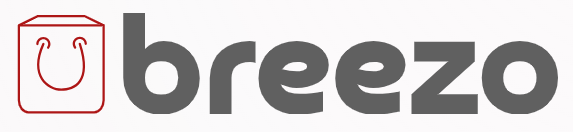

<header  class=" w-full h-auto top-0 bg-[#ffffff] fixed z-40 py-2 ">
    <nav class="relative flex justify-between items-center px-2 lg:px-1">
        <!-- Logo and Language Change Section -->
        <div class="flex items-center lg:px-2">
            <!-- Logo -->
            <a routerLink="" class="px-4 flex items-center flex-row">
                
            </a>
            <!-- Navbar Items -->
            <div class="items-center hidden xl:flex">
                <ul class="flex items-center relative">
                    <ng-container *ngFor="let navbar of Navbars()">
                        <li class="relative group custom-item" [ariaLabel]="navbar.name" appHoverToggleMenu>
                            <span>{{ navbar.name }}</span>
                            <app-menu *ngIf="navbar.menus && navbar.menus.length > 0" [menuCategories]="navbar.menus"
                                class="max-h-0 overflow-hidden z-10 menu "></app-menu>
                        </li>
                    </ng-container>
                </ul>
            </div>
        </div>

        <!-- Support and Other Icons -->
        <div class="flex items-center">
            <ul class="hidden items-center sm:flex">
                <li class="text-[13px] font-semibold px-2 py-1.5 cursor-pointer" aria-label="Support">Support</li>
                <li class="text-[13px] font-semibold px-2 py-1.5 cursor-pointer" aria-label="Business">Business</li>
            </ul>
            <div class="icon flex items-center justify-center md:px-5">
                <i class='bx bx-search text-[21px] md:text-[24px] font-extralight' aria-label="Search"></i>


                <a routerLink="checkout/cart" type="button"
                    class="m-1 ms-0 relative  inline-flex items-center gap-x-2 text-sm font-medium rounded-lg border ">
                    <svg class="shrink-0 size-6" xmlns="http://www.w3.org/2000/svg" width="24" height="24"
                        viewBox="0 0 24 24" fill="none" stroke="currentColor" stroke-width="2" stroke-linecap="round"
                        stroke-linejoin="round">
                        <path d="m5 11 4-7"></path>
                        <path d="m19 11-4-7"></path>
                        <path d="M2 11h20"></path>
                        <path d="m3.5 11 1.6 7.4a2 2 0 0 0 2 1.6h9.8c.9 0 1.8-.7 2-1.6l1.7-7.4"></path>
                        <path d="m9 11 1 9"></path>
                        <path d="M4.5 15.5h15"></path>
                        <path d="m15 11-1 9"></path>
                    </svg>
                    <span *ngIf="_basketService.numberOfItemInBasket$ | async"
                        class="flex absolute -top-1 end-0 -mt-2 -me-2">
                        <span
                            class="animate-ping absolute inline-flex size-full rounded-full bg-red-400 opacity-75"></span>
                        <span
                            class="relative flex items-center justify-center text-[10px] bg-green-400 text-white rounded-full w-4 h-4">
                            {{_basketService.numberOfItemInBasket$ | async}}+
                        </span>
                    </span>
                </a>


                <i routerLink="/auth/login" class='bx bx-user text-[21px] md:text-[24px] font-extralight'
                    aria-label="User Profile"></i>
                <div *ngIf="!isOpenSideBar" (click)="toggleSidebar()" class="block lg:hidden" aria-label="Menu">
                    <i class='bx bx-menu text-3xl'></i>
                </div>
                <div *ngIf="isOpenSideBar" (click)="toggleSidebar()" class="flex items-center justify-end">
                    <i class='bx bx-x text-3xl  border border-dashed'></i>
                </div>
            </div>
        </div>
    </nav>
    <!-- Render sidebar -->
    <app-sidebar-mobile class="sidebar" (closeSidebar)="closeSidebar()" *ngIf="isOpenSideBar" @sidebarAnimation
        [Navbar]="Navbars()">
    </app-sidebar-mobile>

</header>
<ng-template #hiddenNavbar></ng-template>